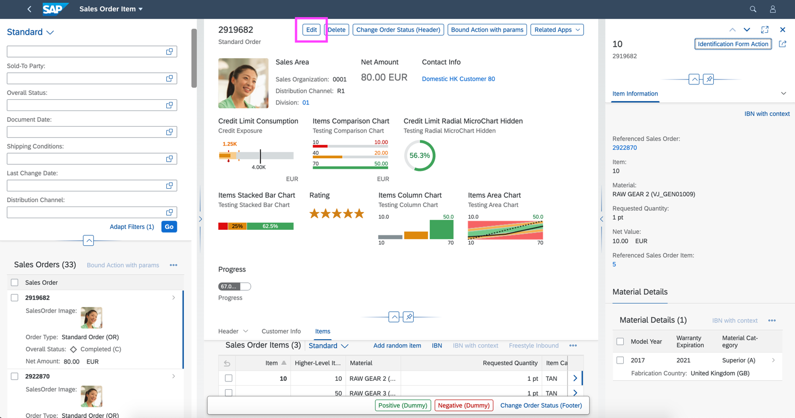
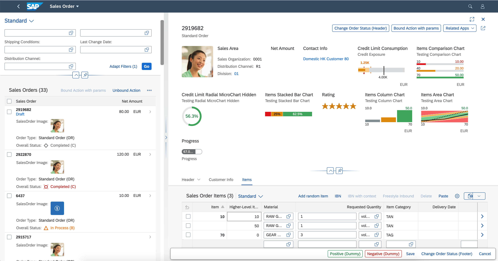
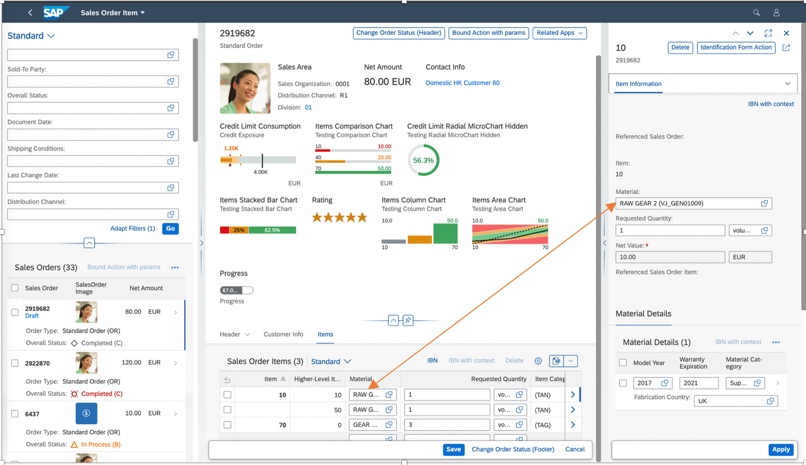

The flexible column layout offers different layouts with up to three columns. Depending on which panel the user is focused on, it can be expanded. The user can also switch between different layouts and enable full-screen mode.
Use the following attributes to create the column layout you want:
defaultTwoColumnLayoutType: 2-column layout with these
options:
TwoColumnsBeginExpanded
TwoColumnsMidExpanded
defaultThreeColumnLayoutType: 3-column layout with these options:
ThreeColumnsMidExpanded
ThreeColumnsEndExpanded
Users can expand and collapse the columns using the focus buttons. They can change to full-screen mode by choosing the full-screen button.
For the overview page, the flexible column layout is not relevant.
The analytical list page only supports the
TwoColumnsBeginExpanded layout. For more
information, see also 2409984.
The flexible column layout can be used in draft and non-draft scenarios.
Both draft and non-draft apps support 2-column and 3-column layouts.
In non-draft flexible column layout apps with create, read, update, and delete (CRUD) capabilities, only the last column shows the Edit and Delete buttons.
To enable the flexible column layout in an app, create an entry in manifest.json, as follows:
"sap.ui.generic.app": {
"_version": "1.1.0",
"settings": {
"flexibleColumnLayout": {
"defaultTwoColumnLayoutType": "TwoColumnsMidExpanded",
"defaultThreeColumnLayoutType": "ThreeColumnsEndExpanded"
}
},
"pages": [...For
optimum readability, you can set the PopinLayout property to
Block, GridLarge, or
GridSmall. For more information, see Adapting the UI: List Report and Object Page.
For each page configured in the manifest you can define a default layout that is
used when the page is opened. You can use the defaultLayoutType
property to do so. For example, you can use the
MidColumnFullScreen property value to open a page in
full-screen mode. This overrides the layout which has been defined in the global
flexibleColumnLayout settings for the corresponding column.
Note that this is only relevant if different pages in the same column need
different default layouts.
For an object page, you can define "defaultLayoutType": "OneColumn". By doing so, in the flexible column layout, this object page moves to the first column. All other object pages that are below the first one in the hierarchy move up accordingly. If they have the same setting, they also move to the first column.
Usually, this setting is made on the main object page. After navigating from the list report, the object page is then displayed in full-screen mode, that is, the main object page replaces the list report. When navigating to an item, the main object remains in the first column and the item is displayed in the second column.
"sap.ui.generic.app": {
"settings": {
"flexibleColumnLayout": {
"defaultTwoColumnLayoutType": "TwoColumnsMidExpanded",
"defaultThreeColumnLayoutType": "ThreeColumnsEndExpanded"
}
},
"pages": [{
"entitySet": "…",
"component": {
"name": "sap.suite.ui.generic.template.ListReport",
"settings": {
…
}
},
"pages": [{
"entitySet": "…",
"defaultLayoutType": "OneColumn",
"component": {
"name": "sap.suite.ui.generic.template.ObjectPage",
"settings": {
…
}
},
To enable the flexible column layout, add the rootView
object to the manifest as below:
You can create an entry in manifest.json
under the routing key to specify the routerClass. It has to be set
to sap.f.routing.Router. In the routing.config,
the optional flexibleColumnLayout object allows you to specify the
default expansion of the columns to two columns and three columns layout.
"sap.ui5": {
"rootView": {
"viewName": "sap.fe.templates.RootContainer.view.Fcl",
"type": "XML",
"async": true,
"id": "appRootView"
},
"routing": {
"config": {
"routerClass": "sap.f.routing.Router",
"flexibleColumnLayout": {
"defaultTwoColumnLayoutType": "TwoColumnsMidExpanded",
"defaultThreeColumnLayoutType": "ThreeColumnsMidExpanded"
}
},
"routes": [
.
.
.
The route target leads to an array instead of a single element in the usual
fullscreen application. The pattern key format describes the pattern to be
matched from a navigation to identify the route, but it must end with an
optional query parameter :?query:so as to add the pattern.
The following keys should be set:
name: Unique identifier of the current route
target: Array listing the targets that will be
displayed
"routes": [
{
"pattern": ":?query:",
"name": "SalesOrderManageList",
"target": ["SalesOrderManageList"]
},
{
"pattern": "SalesOrderManage({key}):?query:",
"name": "SalesOrderManageObjectPage",
"target": ["SalesOrderManageList", "SalesOrderManageObjectPage"]
},
{
"pattern": "SalesOrderManage({key})/_Item({key2}):?query:",
"name": "SalesOrderItemObjectPage",
"target": ["SalesOrderManageList", "SalesOrderManageObjectPage", "SalesOrderItemObjectPage"]
},
{
"pattern": "SalesOrderManage({key})/_Item({key2})/_MaterialDetails({key3}):?query:",
"name": "MaterialDetailsObjectPage",
"target": ["MaterialDetailsObjectPage"]
},
{
"pattern": "SalesOrderManage({key})/_Item({key2})/_MaterialDetails({key3})/_MaterialRatings({key4}):?query:",
"name": "MaterialRatingsObjectPage",
"target": ["MaterialRatingsObjectPage"]
},
{
"pattern": "SalesOrderManage({key})/_Item({key2})/_MaterialDetails({key3})/_MaterialRatings({key4})/_MaterialRatingsDetails({key5}):?query:",
"name": "MaterialRatingsDetailsObjectPage",
"target": ["MaterialRatingsDetailsObjectPage"]
}
]For each target, the following keys should be set:
type: Component
id: unique identifier for the current target
name: name of the template to be use by the view
sap.fe.templates.ListReport should be used
for the first level (landing view)
sap.fe.templates.ObjectPage should be used
for any sub-sequent level
controlAggregation: specify where the view should be
located
beginColumnPages: should be used for the
first column to be displayed
midColumnPages: should be used for the
second column
endColumnPages: should be used for any
additional columns
contextPattern: navigation path of the current
target
All other keys remain unchanged compared the fullscreen applications
"targets": {
"SalesOrderManageList": {
"type": "Component",
"id": "SalesOrderManageList",
"name": "sap.fe.templates.ListReport",
"controlAggregation": "beginColumnPages",
"contextPattern": "",
"options": {
...
// Same as fullscreen //
...
}
},
"SalesOrderManageObjectPage": {
"type": "Component",
"id": "SalesOrderManageObjectPage",
"name": "sap.fe.templates.ObjectPage",
"controlAggregation": "midColumnPages",
"contextPattern": "/SalesOrderManage({key})",
"options": {
...
// Same as fullscreen //
...
}
},
"SalesOrderItemObjectPage": {
"type": "Component",
"id": "SalesOrderItemObjectPage",
"name": "sap.fe.templates.ObjectPage",
"controlAggregation": "endColumnPages",
"contextPattern": "/SalesOrderManage({key})/_Item({key2})",
"options": {
...
// Same as fullscreen //
...
}
},
"MaterialDetailsObjectPage": {
"type": "Component",
"id": "MaterialDetailsObjectPage",
"name": "sap.fe.templates.ObjectPage",
"controlAggregation": "endColumnPages",
"contextPattern": "/SalesOrderManage({key})/_Item({key2})/_MaterialDetails({key3})",
"options": {
...
// Same as fullscreen //
...
}
},
...
}
Switch to edit mode
When you switch to edit mode in a 3-column display, the right column is closed automatically.


Data synchronization between columns
In edit mode, changes made on a subobject page is not automatically reflected on the parent object page. Each column has its own context which is not synchronized with other columns.
